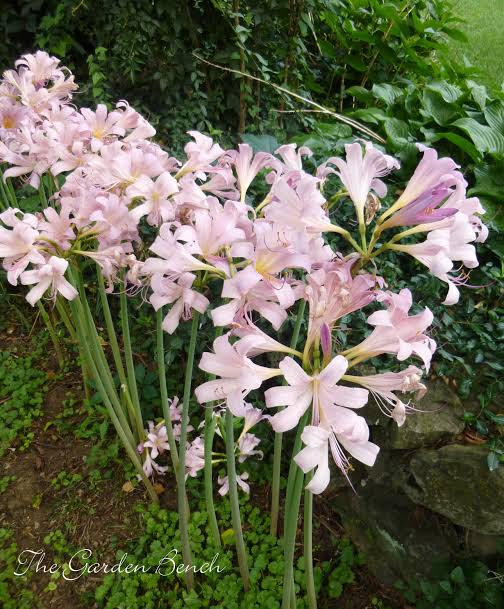
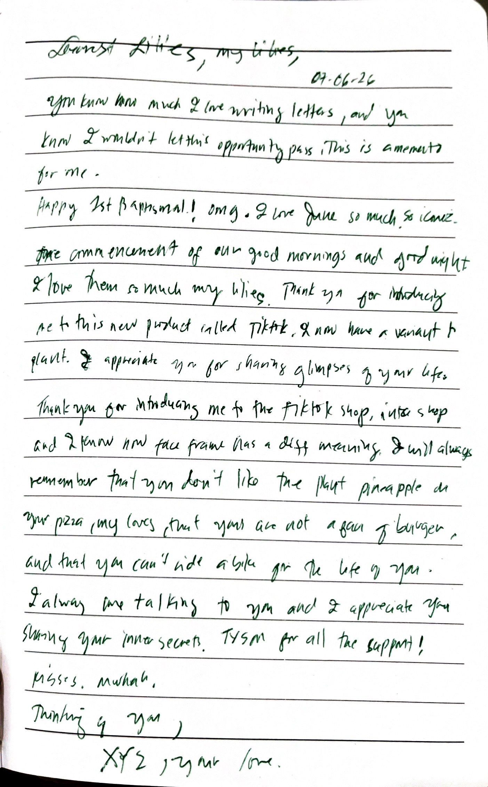

🌿 Welcome to My Little Garden 🌿
Welcome, loves
My name is Flowerpower. I have cared for this garden since the spring of 1999. Flowers grow best when someone remembers them. Thank you for visiting. Please sign the guestbook before you leave. The garden enjoys remembering its visitors.
🌷 Garden Maintenance Log 🌷
- 1999: Planted the first lily. It refused to bloom.
- 2000: Added richer soil. The roots spread farther than expected.
- 2001: The garden remained quiet. Something beneath it did not.
- 2002: Visitors reported hearing footsteps after sunset.
- 2003: Pruned the hedges. They grew back overnight.
- 2004: Every flower now faces the house, even in darkness.
- 2006: Removed an old scarecrow. It returned before dawn.
- 2009: The lilies began blooming where nothing had ever been planted.
- 2012: Birds stopped singing near the eastern fence.
- 2018: Someone waved from inside the greenhouse. There is no greenhouse.
- 2023: Counted twelve lilies. The next morning there were thirteen.
- 2026: My lilies finally bloomed. Every flower opened on June 6, 12:33 A.M. I don't remember planting the last one.
"The strongest roots are the ones nobody sees."
🌼 Gardening Tips 🌼
1. Water Before Sunrise
Experienced gardeners know that plants prefer to be watered before the sun rises. If you hear them asking for water after dark, close your curtains. Healthy plants never speak after sunset.
2. Count Every Flower
Always remember how many flowers you planted. If you wake up and discover one more than yesterday, admire it from a distance. It is considered rude to ask where it came from.
3. Never Disturb the Roots
The oldest roots have earned their place. Digging too deeply may awaken things that have been patiently waiting beneath the soil. Some gardens remember every hand that has touched them.
4. Listen to the Wind
On quiet evenings the wind may carry unfamiliar names through the hedges. They are usually the names of previous gardeners. It is polite not to answer when they call yours.
5. The Empty Bench
Every proper garden should have somewhere peaceful to sit. If you ever find someone already occupying the bench, allow them to finish watching the flowers before you approach.
6. Leave One Rose Unpicked
However beautiful the roses become, leave one untouched. Every garden deserves something that belongs only to itself.
7. Do Not Follow the Butterflies
They always know the shortest path home. Unfortunately, it is rarely your home.
8. Closing the Gate
Before leaving, lock the garden gate and count slowly to ten. If you hear footsteps after the gate is closed, do not look back. The garden dislikes being watched as much as it dislikes being abandoned.
Plant Journal
Something is growing in the back corner behind the shed. I didn't plant it, but it seems to recognize my voice. I will feed it tomorrow.
Sign My Guestbook, my love 💗
Did you enjoy your walk through the hedges? Leave a message before you go.
Loading the guestbook... stay still...
About Me
I live here alone, but I am rarely lonely. The garden provides plenty of company.
🌿 Garden Archive & Memories 🌿
"Every bloom is a memory frozen in time."

The First Lily of 1999
This was the very first bulb I planted. It took years to decide if it liked the soil. I learned that you cannot rush something that wants to take its time. Patience is the sun of the garden.

The Midnight Bloom
Captured during the TikTok bloom and the Fourth of July blossoms. Some flowers arrive with fireworks, while others quietly take root in everyday conversations. This one did both.

The Last Unpicked Rose
Waiting....